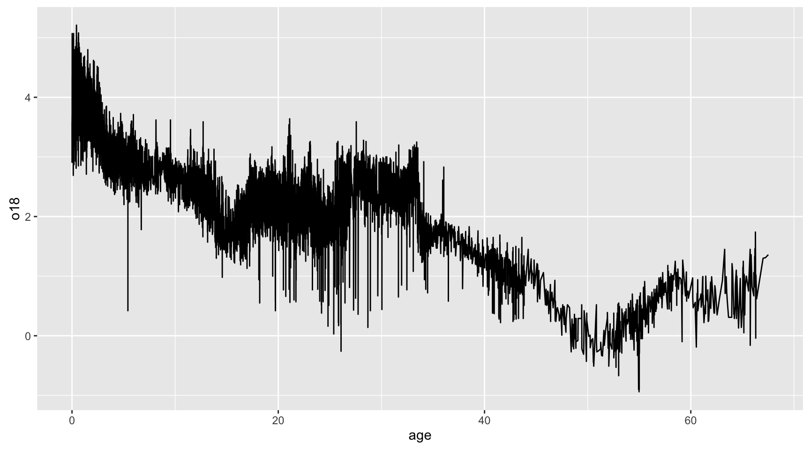
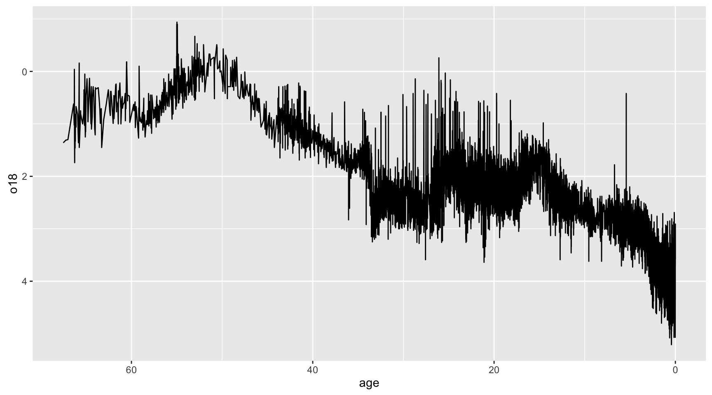
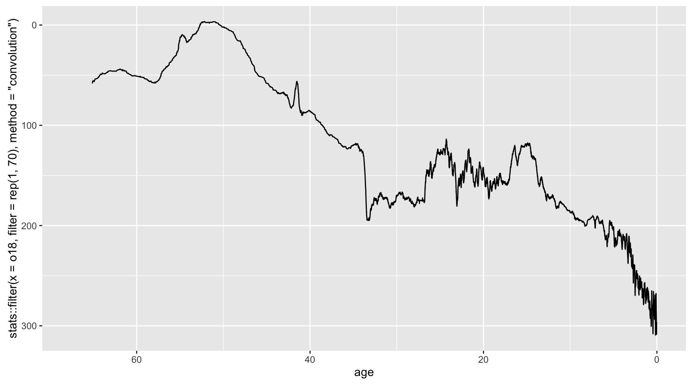
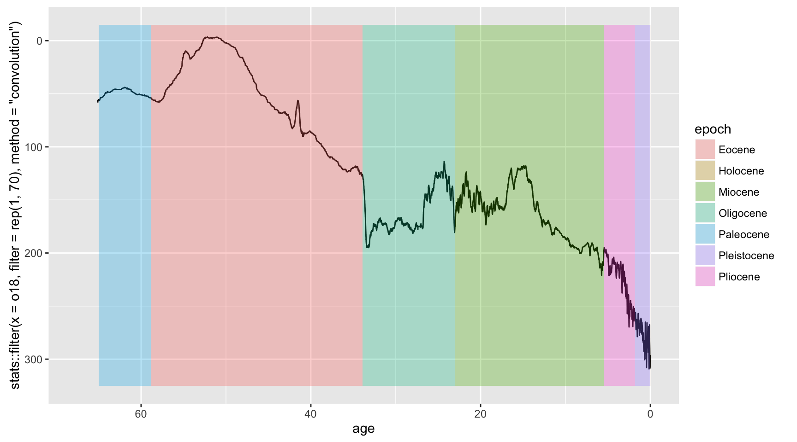
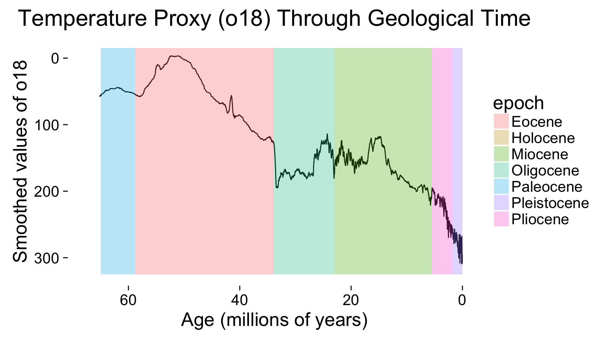
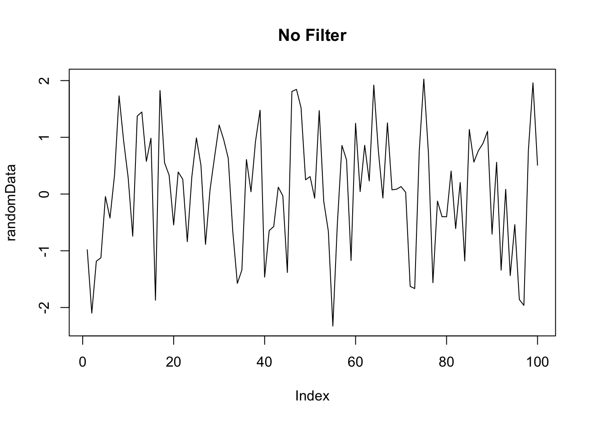
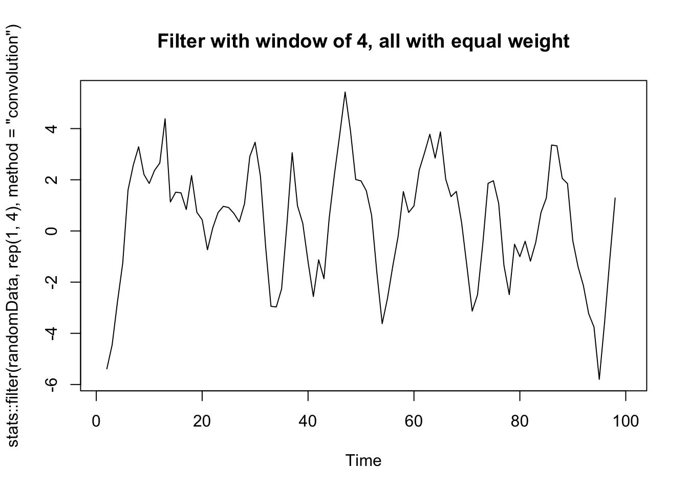
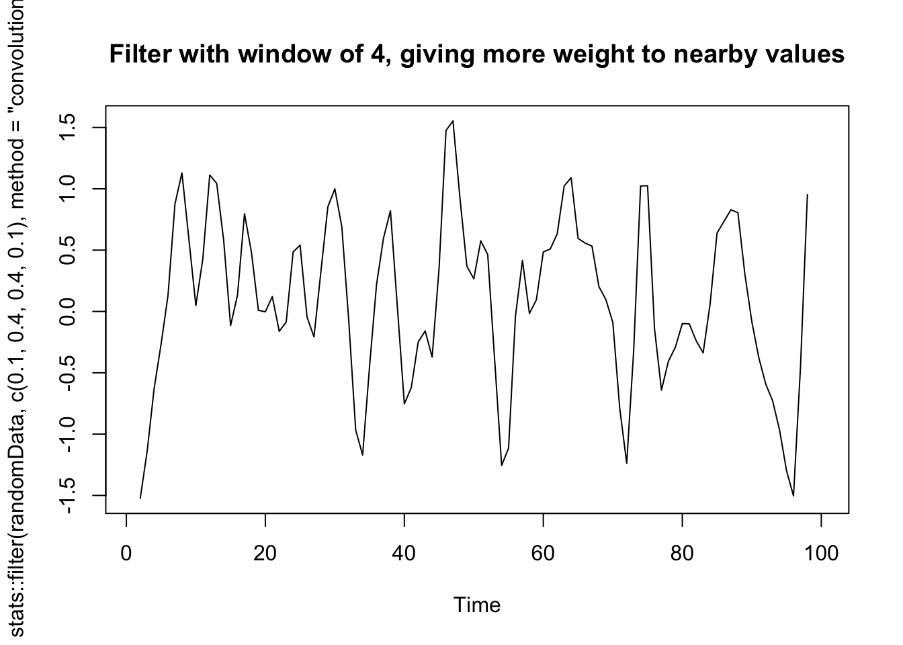
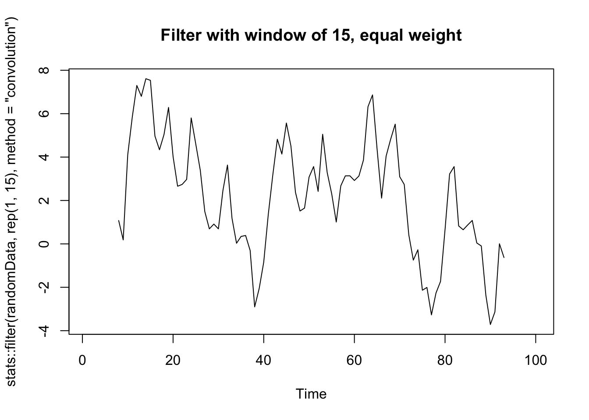

bonus_advanced_ggplot_homework
Problem 3
points possible
- 1 pt base setup
- 1 pt reverse axes
- 3 pts filter
- 3 rectangles
- 2 points theme elements
library(ggplot2)
zachos <- read.table("http://hompal-stats.wabarr.com/datasets/Zachos2001Climate.txt", header=TRUE)
epochs <- data.frame(epoch = c("Paleocene", "Eocene", "Oligocene", "Miocene", "Pliocene", "Pleistocene", "Holocene"), start = c(65, 58.8, 33.9, 23.03, 5.5, 1.8, 0.01))
#the first thing I did was write this line of code, then I fine tuned it
ggplot(data=zachos, aes(x=age, y=o18)) + geom_line()
# clearly, I still need to flip axes, filter, then add the overlays. We will get there. Dont panic!
# first, I flipped the axes
ggplot(data=zachos, aes(x=age, y=o18)) +
geom_line() +
scale_y_reverse() +
scale_x_reverse()
#next, I did the filter
#note I specify that I want the filter function from the stats package like this stats::filter
#otherwise, we will get the dplyr filter function, and this is BAD
#see the end of this document for a note on the filter function
ggplot(data=zachos, aes(x=age, y=stats::filter(x=o18, filter = rep(1, 70), method="convolution"))) +
geom_line() +
scale_y_reverse() +
scale_x_reverse()## Warning: Removed 69 rows containing missing values (geom_path).
#next, I added the rectangles
#note that the start will be the xmin values for the rectangles, but we need the xmax values.
#we can take the subsequent start value as the end value for each epoch
#the last epoch being a special case with and end date of 0
epochs$end <- c(epochs$start[2:length(epochs$start)], 0)
ggplot(data=zachos, aes(x=age, y=stats::filter(x=o18, filter = rep(1, 70), method="convolution"))) +
geom_line() +
scale_y_reverse() +
scale_x_reverse() +
geom_rect(aes(xmin=start, xmax=end, ymin=-15, ymax=325, fill=epoch), alpha=0.3, data=epochs, inherit.aes=FALSE)## Warning: Removed 69 rows containing missing values (geom_path).
# the trickiest part is of the rectangles is inherit.aes=FALSE
# This is needed so the aesthetics from the base layer aren't expected
# in each of the layers. Otherwise geom_rect will complain that it can't find 'age' or `o181
# this is a new feature of ggplot2, so it is very tricky (it wasn't necessary when I wrote this question
# so I didn't explain it to you!)
#next, I clean up the labels and add the theme
finalPlot <- ggplot(data=zachos, aes(x=age, y=stats::filter(x=o18, filter = rep(1, 70), method="convolution"))) +
geom_line() +
scale_y_reverse() +
scale_x_reverse() +
geom_rect(aes(xmin=start, xmax=end, ymin=-15, ymax=325, fill=epoch), alpha=0.3, data=epochs, inherit.aes=FALSE) +
theme_classic(20) +
labs(x="Age (millions of years)", y="Smoothed values of o18", title="Temperature Proxy (o18) Through Geological Time")
finalPlot## Warning: Removed 69 rows containing missing values (geom_path).
#darn it, the epochs aren't in the correct order. I should go back and make epoch an ordered factor
epochs$epoch <- ordered(epochs$epoch, levels=epochs$epoch)
finalPlot## Warning: Removed 69 rows containing missing values (geom_path).
A note on the filter function.
stats::filter() calculates a running average by appling a moving window (or convolution filter). Basically, the filter is applied to each element in the time series, and the values within the window are averaged. The average can be weighted, so need to provide a vector of weights for how much weight to give each value in the filter window.
randomData <- rnorm(100)
plot(randomData, type="l", main="No Filter")
plot(stats::filter(randomData, rep(1, 4), method="convolution"), type="l", main="Filter with window of 4, all with equal weight")
plot(stats::filter(randomData, c(0.1, 0.4, 0.4, 0.1), method="convolution"), type="l", main="Filter with window of 4, giving more weight to nearby values")
plot(stats::filter(randomData, rep(1, 15), method="convolution"), type="l", main="Filter with window of 15, equal weight")